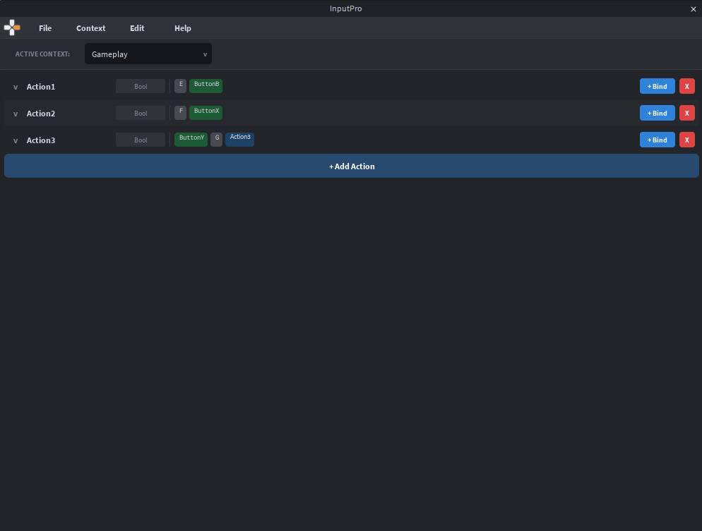
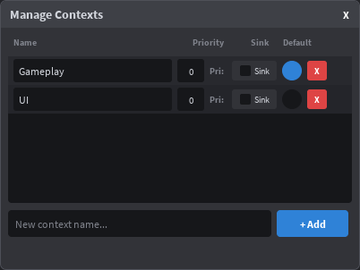
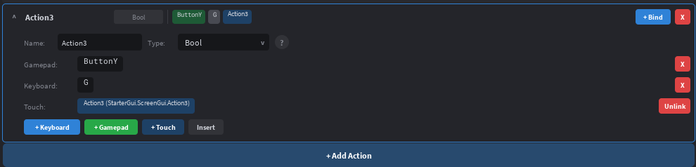
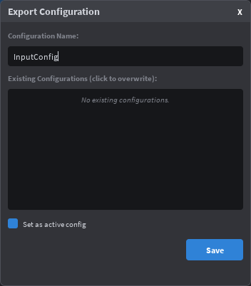
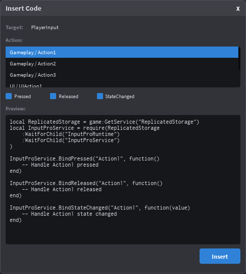

Visual input binding editor for Roblox's Input Action System. Configure keyboard, gamepad, and touch bindings in Studio.
InputPro ships as two packages: a paid Studio plugin for visual editing, and a free open-source runtime for your game code.
Use the visual editor to create contexts, actions, and bindings. Link your existing touch buttons to actions. Listen for keys in real time.
One click exports your config as Roblox instances to StarterGui/InputPro/. A bootstrap script is auto-created.
The runtime reads your exported config and provides a simple API: BindPressed, SetContext, CreatePromptHint, and more.
The InputPro plugin adds a visual editor to Roblox Studio for creating input bindings without writing code.

Contexts group related actions and control when they're active. A game might have "Gameplay", "UI", and "Vehicle" contexts.
Manage contexts via Context > Manage Contexts in the menu bar, or use the context dropdown in the top bar.

Expand an action row and click "+ Keyboard" or "+ Gamepad" to add a binding. The plugin enters Listen Mode — press a key or button and it's bound immediately. You can also add bindings manually from a dropdown.
InputPro doesn't generate touch UI — you design your own buttons in StarterGui, then link them to actions in the plugin. This gives you full control over your mobile UI design.
On export, each linked button is stored as attributes (TouchButtonPath, TouchButtonName) on the InputAction instance. At runtime, InputProService resolves the path in PlayerGui, creates an InputBinding with its UIButton property set to your button, and Roblox automatically wires tap events to the action's Pressed/Released signals.

R2/L2 gamepad triggers support custom pressed/released thresholds. Click the binding's edit button to configure when the trigger registers as pressed or released (0.0–1.0 range).
File > Export Config creates the full instance hierarchy in StarterGui/InputPro/<name> and:
ReplicatedStorage/InputProRuntime/LocalScript in StarterPlayerScripts/File > Import Config reads an existing export back into the editor for modification.

InputPro can generate boilerplate code for your actions and insert it directly into your scripts.
LocalScript in the ExplorerThe generated code includes:
require block for InputProService (auto-skipped if already present)BindPressed / BindReleased callbacks (Bool actions only)BindStateChanged callback (all action types)-- Example generated code for a "Jump" action:
local ReplicatedStorage = game:GetService("ReplicatedStorage")
local InputProService = require(ReplicatedStorage
:WaitForChild("InputProRuntime")
:WaitForChild("InputProService")
)
InputProService.BindPressed("Jump", function()
-- Handle Jump pressed
end)
InputProService.BindReleased("Jump", function()
-- Handle Jump released
end)StateChanged is available — Pressed and Released are automatically disabled in the UI.

| Problem | Solution |
|---|---|
| F key won't bind in listen mode | Studio intercepts F when Explorer has a selection. The plugin auto-clears selection on focus, but if it still happens, click inside the plugin widget first. |
| Gamepad not detected | Connect your gamepad before opening Studio. Ensure the viewport is in focus when using listen mode for gamepad — the plugin shows a reminder when you click "+ Gamepad". |
| Export not appearing | Check StarterGui/InputPro/ in the Explorer. Make sure you haven't filtered instance types. |
| Bootstrap not running | Verify StarterPlayerScripts/InputProBootstrap exists and its ConfigName attribute matches your export name. |
InputProService is a client-side module that reads exported configs and provides a clean API for input handling.
If you're using the plugin, the runtime is auto-installed on export. For manual installation:
InputProService.luau from the GitHub repositoryReplicatedStorage/InputProRuntime/InputProServiceLocalScript-- In a LocalScript (e.g. StarterPlayerScripts)
local InputProService = require(
game:GetService("ReplicatedStorage")
:WaitForChild("InputProRuntime")
:WaitForChild("InputProService")
)
-- Initialize from an exported config
InputProService.Init("MyGameInput")
-- Or initialize for manual/code-only setup
InputProService.InitManual()PlayerGui/InputPro/<configName>. Caches all contexts and actions, wires touch bindings, and auto-enables the default context if one was set in the plugin. Must be called once before other API calls (or they yield until ready)."Jump") and qualified names ("Gameplay/Jump"). Returns nil if not found.:Disconnect() method. Yields until Init completes.:Disconnect() method.boolean for Bool, number for Direction1D, Vector2 for Direction2D, Vector3 for Direction3D.-- Bool action: Jump
InputProService.BindPressed("Jump", function()
character:FindFirstChildWhichIsA("Humanoid"):ChangeState(Enum.HumanoidStateType.Jumping)
end)
-- Direction2D action: Move (returns Vector2)
InputProService.BindStateChanged("Move", function(value)
-- value is a Vector2 with X and Y components (-1 to 1)
moveDirection = Vector3.new(value.X, 0, value.Y)
end)exclusive is true, disables all other contexts first. Fires ContextChanged.ContextChanged.:Connect(callback).-- Exclusive switch: only Gameplay is active
InputProService.SetContext("Gameplay", true)
-- Additive: enable UI alongside Gameplay
InputProService.SetContext("UI", false)
-- Disable a specific context
InputProService.DisableContext("UI")
-- Listen for context changes
InputProService.ContextChanged:Connect(function(name, enabled)
print(name, enabled and "ON" or "OFF")
end)(assetId, keyCodeName) — use the asset for button glyphs(nil, displayName) — e.g. "E", "Space", "LShift"(nil, nil)"TopLeft", "TopRight" (default), "BottomLeft", "BottomRight", "Center"-- Add a key hint badge to an inventory slot
local hint = InputProService.CreatePromptHint("OpenInventory", inventoryButton, {
Corner = "BottomRight",
Size = 28,
Offset = Vector2.new(4, 4),
})
-- hint.Frame — the UI frame instance
-- hint.Update() — force refresh
-- hint.Destroy() — cleanupPromptHintTemplate Frame exists in your exported config folder, it will be cloned instead of the default badge. The template must contain children named GlyphImage (ImageLabel) and KeyText (TextLabel).
You can use InputProService without the plugin by creating contexts, actions, and bindings in code.
sink is true, input doesn't pass to lower-priority contexts.Enum.InputActionType.Bool, Direction1D, Direction2D, Direction3D, ViewportPosition.KeyCode for keyboard/gamepad buttons. The optional config table accepts PressedThreshold and ReleasedThreshold for analog triggers (R2/L2 auto-default to 0.1).-- ManualSetup.client.luau (place in StarterPlayerScripts)
local ReplicatedStorage = game:GetService("ReplicatedStorage")
local InputProService = require(
ReplicatedStorage:WaitForChild("InputProRuntime"):WaitForChild("InputProService")
)
-- Initialize without a config file
InputProService.InitManual()
-- Create contexts
InputProService.CreateContext("Gameplay", 1, false)
InputProService.CreateContext("UI", 2, true) -- higher priority, sinks input
-- Create actions
InputProService.CreateAction("Gameplay", "Jump", Enum.InputActionType.Bool)
InputProService.CreateAction("Gameplay", "Sprint", Enum.InputActionType.Bool)
InputProService.CreateAction("Gameplay", "Move", Enum.InputActionType.Direction2D)
InputProService.CreateAction("UI", "CloseMenu", Enum.InputActionType.Bool)
-- Bind keys
InputProService.CreateBinding("Jump", Enum.KeyCode.Space)
InputProService.CreateBinding("Jump", Enum.KeyCode.ButtonA) -- Gamepad A
InputProService.CreateBinding("Sprint", Enum.KeyCode.LeftShift)
InputProService.CreateBinding("Sprint", Enum.KeyCode.ButtonL2, nil, {
PressedThreshold = 0.3,
ReleasedThreshold = 0.2,
})
InputProService.CreateBinding("Move", Enum.KeyCode.W) -- Forward
InputProService.CreateBinding("Move", Enum.KeyCode.S) -- Backward
InputProService.CreateBinding("Move", Enum.KeyCode.A) -- Left
InputProService.CreateBinding("Move", Enum.KeyCode.D) -- Right
InputProService.CreateBinding("Move", Enum.KeyCode.Thumbstick1) -- Gamepad stick
InputProService.CreateBinding("CloseMenu", Enum.KeyCode.Escape)
InputProService.CreateBinding("CloseMenu", Enum.KeyCode.ButtonB)
-- Enable the default context
InputProService.SetContext("Gameplay", true)
-- Connect events
InputProService.BindPressed("Jump", function()
print("Jump!")
end)
InputProService.BindPressed("Sprint", function()
print("Sprint started")
end)
InputProService.BindReleased("Sprint", function()
print("Sprint ended")
end)
InputProService.BindStateChanged("Move", function(value)
print("Move direction:", value)
end)
-- Context switching example
InputProService.BindPressed("CloseMenu", function()
InputProService.SetContext("Gameplay", true) -- exclusive: back to gameplay
end)
-- Device detection
InputProService.ActiveDeviceChanged:Connect(function(device)
print("Switched to:", device) -- "Keyboard", "Gamepad", or "Touch"
end)If you're curious what the plugin creates, here's the instance hierarchy it exports to StarterGui/InputPro/<ConfigName>/:
StarterGui/
InputPro/ -- Folder
MyGameInput/ -- Folder (your config name)
@DefaultContext = "Gameplay" -- Attribute (optional)
Gameplay/ -- InputContext
Priority = 1
Sink = false
Jump/ -- InputAction (Type = Bool)
@TouchButtonPath = "game.StarterGui.MobileUI.JumpBtn" -- (if linked)
@TouchButtonName = "JumpBtn" -- (if linked)
Keyboard_Space/ -- InputBinding (KeyCode = Space)
Gamepad1_ButtonA/ -- InputBinding (KeyCode = ButtonA)
Move/ -- InputAction (Type = Direction2D)
Keyboard_W/ -- InputBinding
Keyboard_S/
...
UI/ -- InputContext
Priority = 2
Sink = true
CloseMenu/ -- InputAction
...InputProService.Init("MyGameInput") to load it. The runtime doesn't care how the instances were created.
Action types determine what kind of value an InputAction produces. Choose the type that matches your gameplay need.
| Type | Value | Use Case | Events |
|---|---|---|---|
Bool |
boolean |
Jump, shoot, sprint, interact — any on/off action | Pressed, Released, StateChanged |
Direction1D |
number |
Throttle, zoom level, single-axis analog input | StateChanged |
Direction2D |
Vector2 |
Character movement, camera rotation, 2D stick input | StateChanged |
Direction3D |
Vector3 |
Flight controls, 6DOF movement (up/down + left/right + forward/back) | StateChanged |
ViewportPosition |
Vector2 |
Mouse cursor position, touch point, screen-space raycasting | StateChanged |
Pressed and Released events. For all other types, use BindStateChanged to receive continuous value updates.